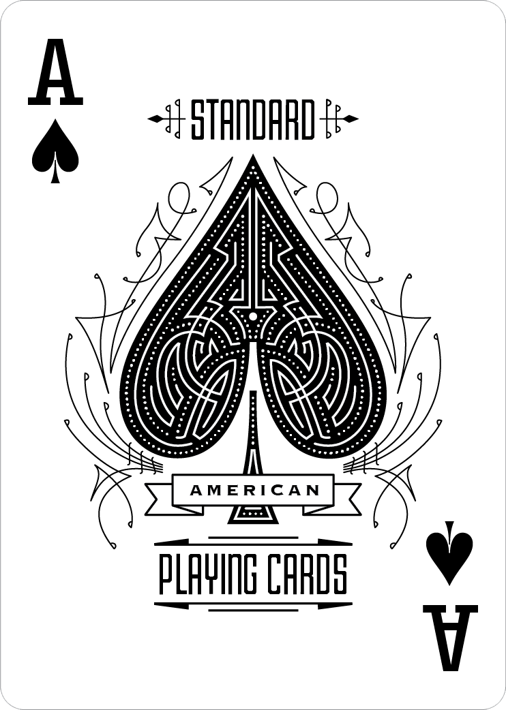
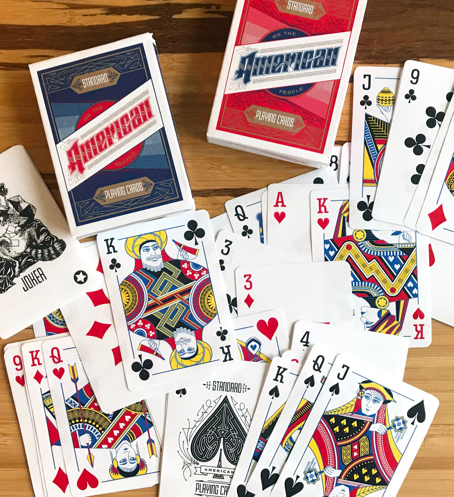
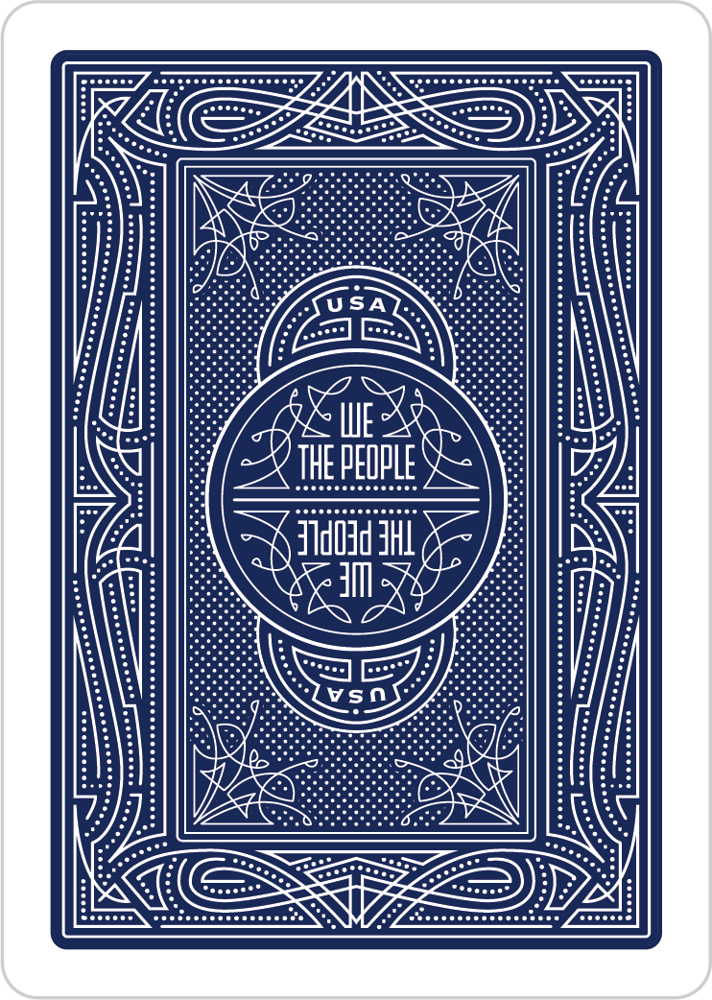

Sometimes, a piece of design has been around forever, and the longevity of it makes it exist in a way where it is unquestioned. It's accepted as a default and nobody really thinks about what that default means.
Simmering
So much of design lies in just poking things that already exist. Why is this like it is? Does it have to be? What would change if it was different? How different does it even need to be? Sometimes the most interesting design problems are very very small nudges or course corrections, not big sweeping features.

Most design is just sitting and wrestling with the problem. You research and ponder, stare off into space, occassionally draw a rectangle, and then stare off again. When you are about to dedicate a portion of your life to something, clarifying the purpose and intent behind the concept should take as long as it should. What good will it do, and what bad can it do?
Marinatiion
The Prep
So you sit down and take a first step, a first sketch, a first round. If it has legs, you keep going, and if it doesn't you think again. The same questions come back again and again, but you answer them differently each new time you ask.
Into the Fire
Revisions galore. It's sorting and organizing on paper or screen, but also in your mind. Which ideas are keepers and which are not? Maybe you just still don't know, and at the end you realize you may never know a hell of a lot of the answers.

You work so fucking hard, and you hope and hope the work makes sense because you spent so long fighting for or against an idea, but at the end of the day you can never be sure what people will take from it.
Well done?
Then comes the hardest part of design, which is knowing when to stop. When is done, when is done enough, and when is throw it away?

The next hardest thing is understanding when it's good but it's not done, and you are so goddamn sick of it but you need to regroup and push through to the finish you know is there.

The process is fluid, some things come into being rougher, mostly existing in your mind. Some things are tighter, but turn out completely different. What's important is keeping space for evolution.

Then you take those evolutions and apply them to other things. You build on what you've made and evolve it even more.

Table Service


At a certain point, things need to be real, or not. Either you gotta Velveteen Rabbit that project or let it go. Making something is one thing, but making something real is a whole other ball game and requires a level of patience, checking, and rechecking that the world of weekly deploys and MVPs doesn't seem to appreciate.
Expediting
Details

You can get lost in the details as a designer. In making something real, it's easy to get sidetracked, but there is also a certain joy in caring enough about the thing you are making and respect the recipient enough that you keep refining, even if you know the thing you're doing will be hidden under a sticker and no one will ever see it.

And there are these points of decision making where you're putting in your time and effort and you have to decide what those things are worth, and what the execution of this thing is worth, and what it's worth to your audience. It can feel so serious, sometimes.
But it would be a shame if there was no room for fun in everything.
Completing Service
Then you let it out in the world, and see what happens.


- 